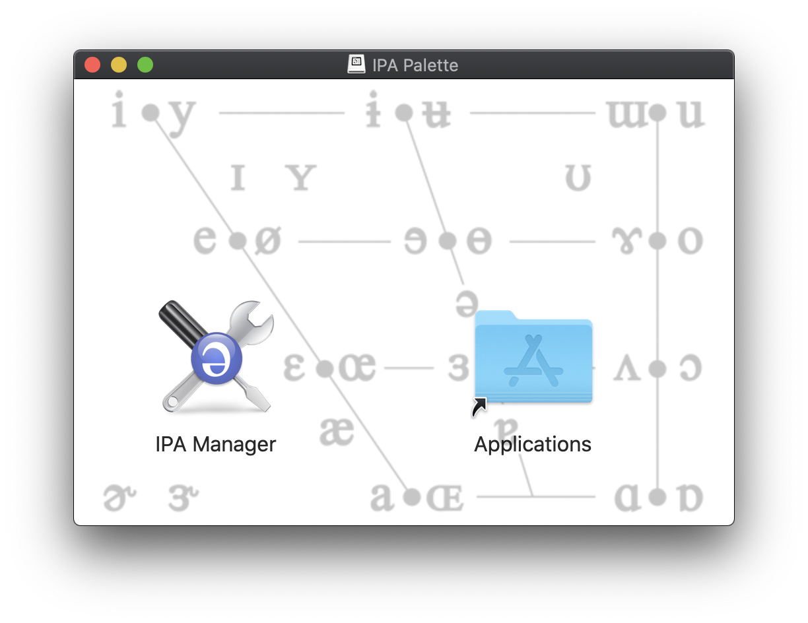
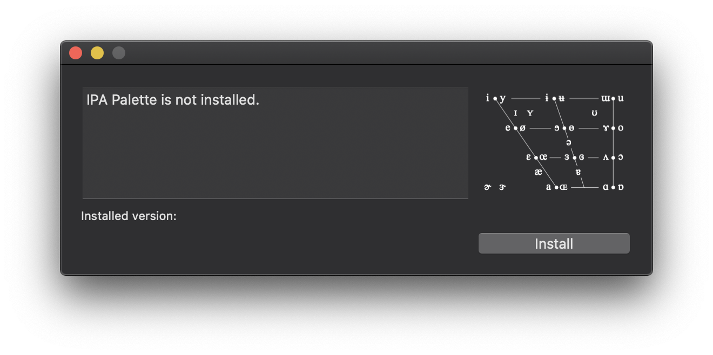
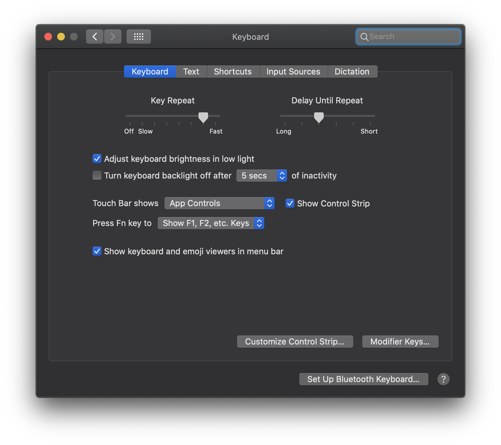
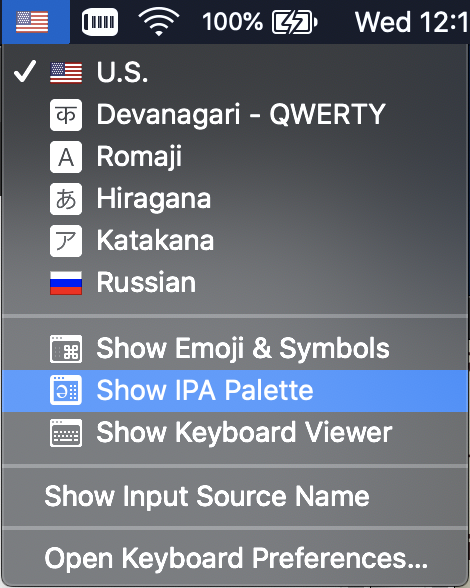
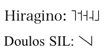

User's Guide
for
IPA Palette v2.3
/ʔa͜ɪ.pʰi'ɛ͜ɪ.pʰə'lɛt/
Brian S. "Moses" Hall
BLUGS.COM LLC
In a Nutshell
IPA Palette is a Unicode input method for the Mac. It allows users of macOS 10.6 and later to insert International Phonetic Alphabet symbols in any Unicode-enabled text field or editor.How to Enable
| First of all, you may need to enable "App Store and identified developers" in the Security & Privacy System Preferences panel. Download and open the installer disk image. Drag the IPA Manager app to the Applications link. IPA Manager is the all-in-one installer and updater for IPA Palette. |  |
| IPA Manager has a pretty self-explanatory user interface. When you select "Install", it installs the actual IPA Palette app in your system, and notifies macOS that there is a new (or updated) input method that needs to be activated. At this stage there may be one more thing you need to do… |  |
| If your Input Sources "flag" menu is not enabled, got to System Preferences → Keyboard → Keyboard. Make sure the "Show keyboards and emoji viewers in menu bar" check box at the bottom of the window is checked. This enables the Input Menu. |  |
How To Use
Select the Input Menu item "Show IPA Palette". The IPA Palette main window should then open as pictured below.|  |  |
To enter text, you click on the desired IPA symbol. The preview pane on the right side of the palette shows a magnified image of the character the mouse is over. You can select the preview font you want to see using the popup menu button above it.
Note: the font selection on the palette has no direct influence on the font selection in your document. You can insert a character in the preview font by control-clicking it, but that only applies to the character that is inserted, not to the font selected in the System font panel.
Auxiliary Windows |
IPA Palette keeps track of what auxiliary windows you have open and where they are, so you only need set them up once.
Alternation: Superscripts and Above/Below
Standard IPA superscripts (such as ʰ and ʷ), and superscript versions of other IPA symbols (like ᵊ and ᶿ, when provided by a good font) do not have separate buttons. Instead, you hold down the shift or option key (or both) with the button for the full-sized version of the symbol. Similarly, certain diacritics can alternate between "above" and "below" versions, for example the under-ring that indicates voicelessness (n̥). You can also put the ring above, in the case of a carrier with a descender (ŋ̊).To preview one of these alternate versions, hold down either the shift or option key when the cursor is over a symbol. If Unicode supports an alternate form, the preview will change. To insert the alternate, hold the shift or option key as you click on the symbol.
Example: to insert aspiration /ʰ/, find the voiceless glottal fricative /h/ in the Consonants tab, hold down the shift and/or option keys, and click the symbol.
Note: currently this does not work with the list of results in the search tab, but you can search for the string "aspirated" to find it.
Precomposed Retroflex, Palatal, and Velar Panes |
Keyboard shortcuts |
Settings pane
("Show Keyboard Shortcuts" checkbox), IPA Palette will scan the current keyboard
layout you are using and try to display the keyboard shortcut (if any) for the
symbol you are holding the mouse over. In this way you can use the software as a
sort of "Reverse Keyboard Viewer"; instead of seeing the symbol generated by the
given keys, you see the keys needed to generate a symbol of interest.
User-Defined Symbols
If IPA Palette tried to show all of the symbols used in theoretical and applied linguistics, the window would have twenty tabs and fill the entire screen! It's a painful choice, but only current IPA/ExtIPA symbols (and their superscripts if available) will be officially supported. However, if you need some additional symbols that are not in IPA but are still supported by Unicode, you can add them to your preferences. Or maybe you just use a few IPA symbols and you want them all on the same tab.The
Settings pane has a menu called Custom Symbols.
Using that you can use the Edit… item; a sheet will be displayed
in which you can edit your symbols. You can add (with the plus button) and
delete (with the delete key). You can paste in a symbol, or you can use Apple's
Character Viewer to enter one. Under the Description column you can
describe the symbol if you wish. If you do, the description will be displayed at
the bottom of the palette when you mouse over the symbol, and you can search for
it in the Search tab.The
Custom tab pane is updated every time you edit your list. (If you remove all of them, or don't have any, the Custom pane will not be displayed in the Palette.) Custom symbols and their descriptions are saved in your preferences, so you only have to define them once.Note: if a glyph is a diacritic, IPA Palette will (should — there may be some nonspacing characters it does not know about — let me know if there is one it misses) add the normal dotted circle (
U+25CC) as a placeholder in the table and the image map. You don't need to (and should not) add it manually.Custom symbols also has Export… and Import… items. This functionality was requested by a user who was teaching a class and wished his students to have a certain set of symbols he could prepare for them and just have them load them in without a lot of tedious editing. The file format is just a old plain XML Property List (.plist, like a preferences file). |
Font Support
Although OS X has always had decent IPA support, I am assuming that most IPA Palette users will want something better than decent. I recommend Doulos SIL or Charis SIL, both high-quality free fonts from SIL International. They are the de facto standard IPA fonts, and I have designed IPA Palette with them in mind. Take as an example the IPA tone symbols U+02E5 through U+02E9. While fonts in the Hiragino family can render them, Doulos can form elegant ligatures:
Font "Synchronization"
To insert a symbol in the current open document in the font that you have selected for the font preview, hold down the Control key when you click on it.Note: anything you type subsequently will be in the font that was selected before. Only the inserted symbol will be in the preview font. Note: not all target programs support this. Microsoft Word 2008, for example, suffers from this defect. (Actually its users suffer, but hasn't that always been the case?)
User-Defined Fonts
IPA Palette tries to show only IPA fonts in its popup menu. To be specific, it searches every installed font for those which contain, for example, /ɮ/, LATIN SMALL LETTER LEZH and other symbols typical of IPA, giving fonts with better coverage an orange or green button image in the menu. (The font coverage rating is derived in this portion of the IPA Palette source code.)If you want the menu to show additional fonts, you can do so, but you must modify your preferences using the Terminal or with Property List Editor (part of Apple's XCode developer tool suite). (Note: most users will not need or wish to do this.)
defaults write com.blugs.inputmethod.IPAPalette UserFonts '("Arial Narrow","Papyrus")'
The font names are a combination of "Family" (like "Hiragino Maru Gothic"), and "Typeface" (like "Regular", "W4", or "Bold"). You can omit "Regular", as in the example above for the Papyrus typeface. You can find these names using Font Book or the standard font panel.
How to Report Bugs or Feature Requests
- A pull request on GitHub
- Send a CrashReporter log.
- moses@blugs.com (that's me)
Thanks to...
- Matt Gemmell for permission to use his
MAAttachedWindowcode under GPL 2+ license - Evan Gross from Rainmaker Research for help with fun
NSApplicationundocumented calls for the search pane - Hans-Jörg Bibiko for the German localization (which has been modified in the years since; any errors are certain to be mine)
- David Swain for help in debugging the
cmaptype 2 crasher - Joanne Scheibman for help debugging under Rosetta/Word
- Maxim Makatchev for corrections to the Russian localization
- Many, many other kind folks who have offered suggestions and advice